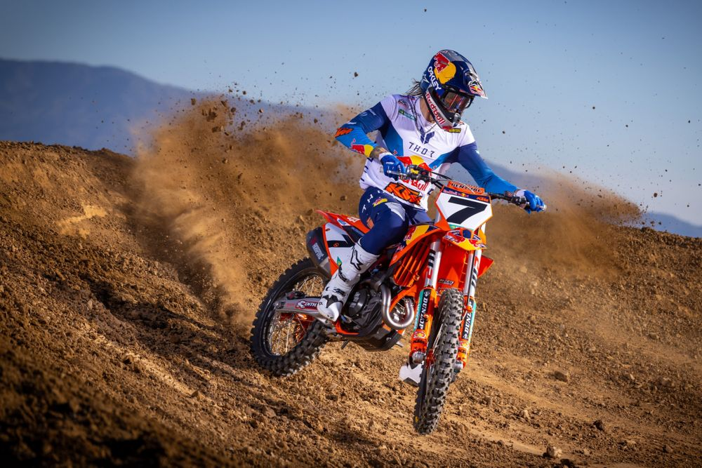
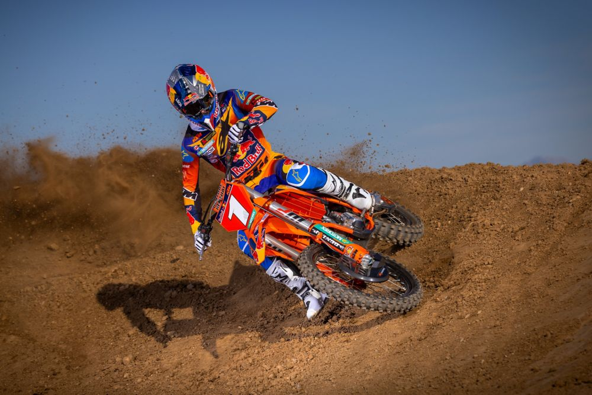
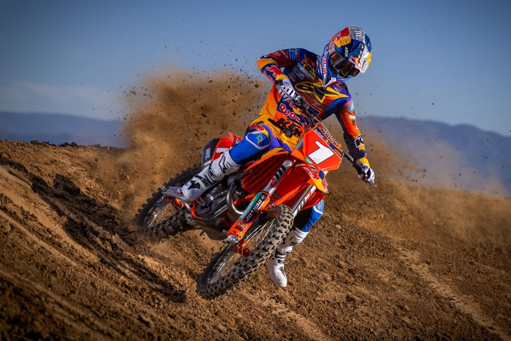
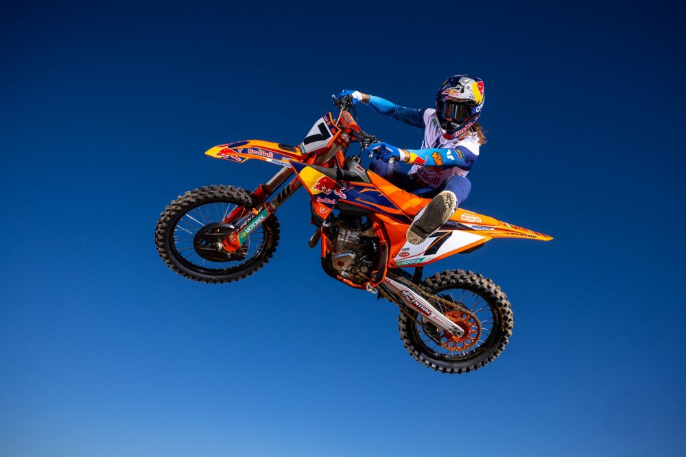
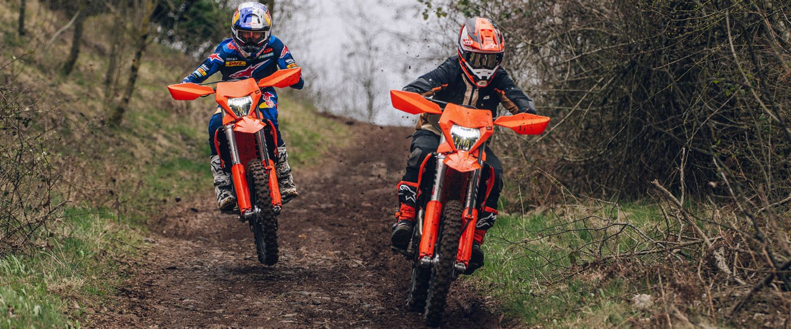

2025 KTM 450 SX-F and KTM 250 SX-F FACTORY EDITIONS are set to roll into start gates and will soon be leaving track rivals in their roost. The latest versions of KTM’s primed READY TO RACE machinery are the only pure competition-focused high-end options for riders who want - and need - to go that extra mile and at extra pace. In trusted KTM FACTORY EDITION style, the 2025 models boast the full Red Bull KTM Factory Racing trim in dedication to the three notable riders that will front the team and company’s push in 2025 AMA Supercross and Motocross series: Chase Sexton, Aaron Plessinger and Tom Vialle. The 2025 line-up carries the latest race look and graphics for the new season and with choices between #4 (Sexton) #7 (Plessinger) or #1 (Vialle) for the KTM 450 SX-F and KTM 250 SX-F FACTORY EDITIONs respectively. These bikes are the closest riders and fans can come to the Pros courtesy of a host of performance and practical KTM upgrades; the only separators will be the talent, fitness, and the hands on the throttles!
Both 2025 KTM FACTORY EDITIONs are based on the technical platform that has won world championships, a 250SX title, Grands Prix, Main Events and banked a host of podium trophies with a wide range of different athletes and riding styles. The 2025 creations will be the last KTM FACTORY EDITIONs of this current SX-F generation. The KTM FACTORY EDITIONs feature light, compact and advanced SOHC single cylinder mass centralized engines. Cylinder, cylinder head, piston and crankshaft development ensure resistant, smooth, torquey, and reliable power output with longer service intervals. The motor package for both models include an Akrapovič system, fully refined EMS and a 44 mm Keihin throttle body as well as Pankl Racing 5-speed gearboxes with quickshifter. The robot-wielded steel frames adhere to precise parameters of longitudinal and torsional flex for exceptional rider feedback, energy absorption, cornering confidence and straight-line stability for acceleration and braking.

The chassis benefits from the latest spec, fully adjustable WP XACT suspension (48 mm AER split air forks and 300 mm dual compression control tool-free rear shock with higher ground clearance for the linkage). The chassis hoists the 7.2 Liter (1.9 gallon) tank and also supports the carefully crafted rider triangle for ergonomics; permitting close control and grip of the bike in any condition and for a wide array of obstacles. Edge the competition with other features such as tool-less air filter access and maintenance marks for rapid servicing, engine mapping (plus traction control and launch control), a Connectivity Unit Offroad (to enable swift and easy engine personalization through the KTMConnect App), larger surface area footrests, and premium components like Brembo clutch and brakes, DID wheels, Neken handlebar technology, Dunlop GeoMax MX34 tires and more. The structure is light and orientated around the anti-squat concept for a distinctive and effective handling sensation, thanks also to the light aluminum subframe.


The 2025 KTM SX-F FACTORY EDITIONS will be rolling off the Austrian production line in December and will be available at authorized KTM dealers from January 2025.

The 2027 KTM EXC and EXC-F range builds on KTM's long-standing success at the highest level of enduro competition. Developed through years of championship-winning racing, the latest lineup delivers proven performance, precise control, and rider-focused ergonomics across all terrain.
For 2027, the KTM EXC range receives a fresh Graphics update, reinforcing its distinctive READY TO RACE identity while maintaining the established technical platforms that define KTM’s position at the forefront of enduro. The range continues with KTM’s advanced chassis concept, proven WP XACT suspension, and refined engine packages across both 2-stroke and 4-stroke models—ensuring a consistent and competitive performance base for riders at every level.
In addition, the KTM enduro range offers access to KTM’s Premium Manufacturer’s Warranty, available in certain territories and subject to servicing and maintenance in line with manufacturer guidelines through authorized KTM dealers. Spanning a broad displacement range, the 2027 KTM enduro lineup caters to riders of all levels and disciplines. From lightweight 2-stroke machines such as the KTM 125 XC-W to the powerful KTM 500 EXC-F, each model is built to deliver precise handling, controllable power, and confidence in demanding offroad conditions.
Across the 2-stroke lineup, KTM’s Throttle Body Injection (TBI) system ensures consistent fueling, crisp throttle response, and smooth, controllable power delivery—from low-speed technical terrain to high-revving special tests.
On the 4-stroke side, the KTM 250 EXC-F provides an accessible entry into race-proven performance, while the KTM 350 EXC-F remains a benchmark for versatility, balancing agility with increased power. At the top of the range, the KTM 450 EXC-F and KTM 500 EXC-F deliver strong, reliable performance for demanding terrain and extended race conditions. Supported by KTM’s global dealer network, riders benefit from expert servicing, widespread parts availability, and a full range of KTM PowerParts and KTM PowerWear to customize performance, protection, and comfort.
Built on decades of racing success and continuous development, the 2027 KTM EXC range remains a reference point in enduro—combining proven performance, modern technology, and long-term reliability for riders worldwide.